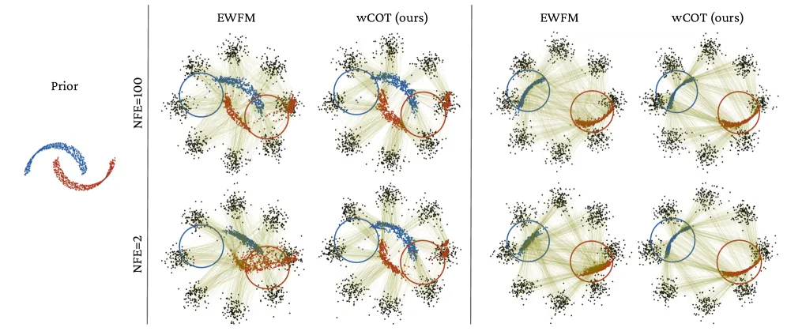
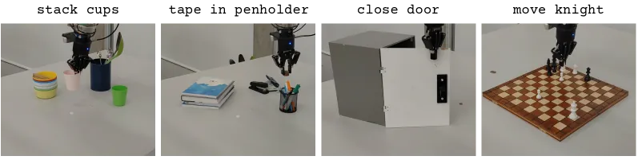
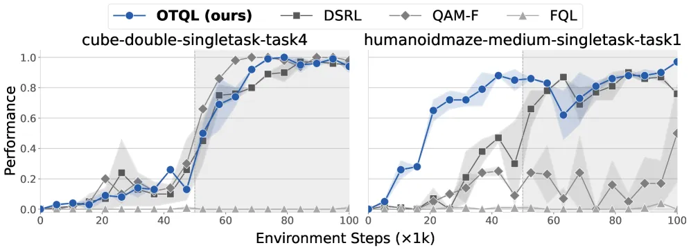
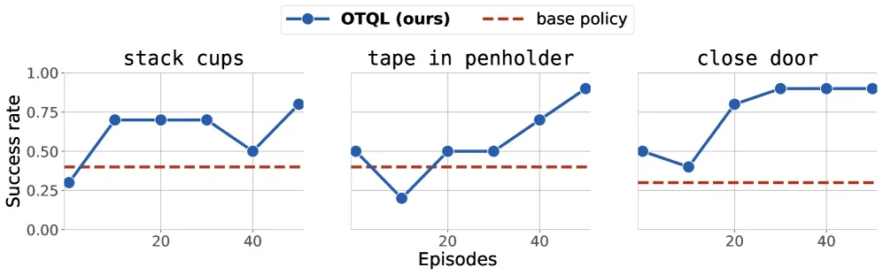
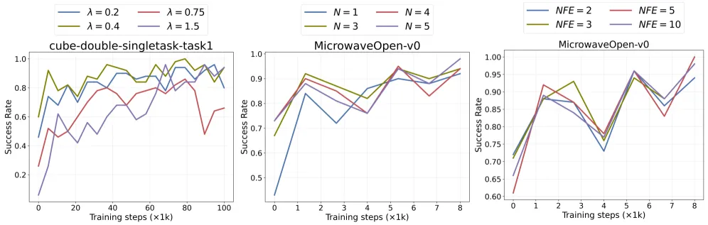

Diffusion / flow policy 能刻画多模态机器人动作分布，但依赖大量高质量示范、推理步数多，遇到分布漂移就退化。OTQL 让机器人用自身交互经验做 RL 后训练：把 advantage 转成权重、解一个 entropic OT 问题得到 noise-action 最优耦合，在拉直积分路径的同时把策略推向高价值动作。仅 50–60 个 episode 就能微调并加速，无需昂贵蒸馏。
Flow / diffusion policy（尤其在 VLA 模型里）能准确捕捉多模态轨迹分布，但要发挥好性能有两个硬约束：快速推理与高质量示范——二者往往难以同时满足。示范不足或次优会让策略行为退化，并在分布漂移下失败。本文要解决的正是：如何用机器人自身经验、通过 RL 后训练来微调并加速一个次优的 flow policy，同时做到 few-step 推理、避免昂贵的 distillation。
"We address the problem of fine-tuning and accelerating suboptimal flow-based policies using the robot's experience through RL post-training."

OTQL 用 advantage-weighted conditional optimal transport (COT) flow matching 训练 flow policy：不再像标准 conditional flow matching 那样独立采样 noise-action 对，而是解一个熵正则最优传输问题重塑耦合分布，把概率质量集中到「low-energy（高回报）」样本上，从而在把策略推向高价值动作的同时把积分路径拉直，实现少步推理。
核心是修改 flow matching 的耦合分布。先由 critic 给出的 advantage 定义能量函数 ℰ（负 advantage），再计算未归一化权重 wj = e−λℰ(aj,cj)，用它对目标测度重新加权，"place mass on low-energy (high-reward) samples"。条件信息通过 cost augmentation 注入：把 action / noise 与「缩放后的条件」拼接成增广向量，对错配条件的配对施加惩罚，保证 source 与 target 共享同一 condition marginal。
训练分几步：① 用 temporal difference loss 和 Bellman target 训练 critic Qφ；② 计算优势 A(s,a)=Q(s,a)−V̂(s)；③ 把 advantage 转成权重并求解 entropic OT，得到最优耦合 Γ*；④ 用 Γ* 里的 noise-action 对做 CFM loss，把学到的向量场推向直线路径；⑤ 若有环境可交互则在线收集新数据（semi-offline，每 10 条示范训练一次）。为避免尖锐 Q 函数导致有效 batch 塌缩，还做了 weight clamping；推理时用 rejection sampling（N=5 候选取最高 Q）作为 "a lightweight refinement that further concentrates samples near the mode"。

评测覆盖 offline RL（OGBench 40 个任务）、offline-to-online RL、MuJoCo 在线微调，以及真实机器人上的单任务策略与 VLA（SmolVLA）适配。基线包括 FQL、QAM-F、DSRL、QC 等。关键卖点：在仅 2 NFE（offline）或 NFE=3（真实任务）下逼近甚至超过高步数方法。
| Benchmark / 任务 | 基线 | OTQL | 说明 |
|---|---|---|---|
| OGBench（40 tasks 平均） | QAM-F 54% / DSRL 48% | 59% | 仅需 2 NFE，比 FQL、QAM-F 高 "at least 5%" |
| antmaze-large | QAM-F 83% | 88% | — |
| cube-double | QAM-F 65% | 68% | offline-online 后接近 90% |
| humanoidmaze-medium（offline→online） | FQL / QAM-F ≈50% | ≈90% | — |
| 真实单任务策略（~50 rollouts） | 36% | 86% | 推理步数 10 → 3（−70% NFE） |
| SmolVLA · tape in penholder | SFT 14/30 | 24/30 | NFE 降到 3 |
| SmolVLA · move knight | SFT 9/30 | 22/30 | 平均成功率提升 "37%" |


作者消融了权重温度 λ、rejection sampling 候选数 N 与推理步数 NFE 的影响：加大 N、适当选择 λ 能进一步集中到高价值 mode，而 NFE 可在保持成功率的前提下大幅压缩。在 MuJoCo 在线任务上，OTQL(NFE=3, N=5) 比 FQL 高约 15% 的最高成功率，并 "performs as well as QC (NFE=10, N=32) while requiring only a fraction of the inference time"。

OTQL 需要能对 flow 的向量场做 flow matching 训练，因此策略必须是基于 neural ODE 的生成模型；并非所有 VLA / world action model 都兼容这种后训练方式。
方法依赖 minibatch 最优传输，随维度升高其有效性下降——原文指出 "inference speed-up and adaptation become more modest as dimensionality increases"。
继承了常规 RL 的挑战：需要人工标注 episode、以及环境 reset 等真实世界成本。